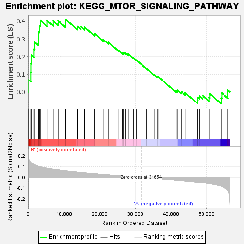
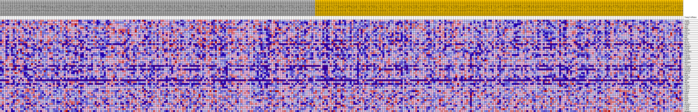
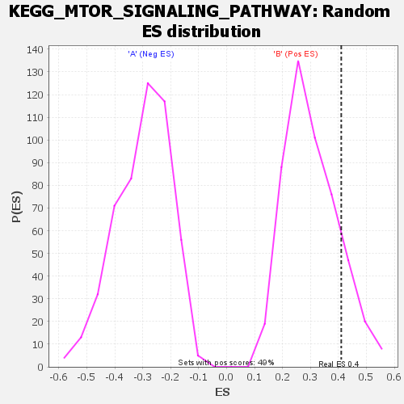

| | | Dataset | my.my.cls#B_versus_A.my.cls#B_versus_A_repos |
| Phenotype | my.cls#B_versus_A_repos |
| Upregulated in class | B |
| GeneSet | KEGG_MTOR_SIGNALING_PATHWAY |
| Enrichment Score (ES) | 0.41013905 |
| Normalized Enrichment Score (NES) | 1.3487146 |
| Nominal p-value | 0.13765182 |
| FDR q-value | 0.47472098 |
| FWER p-Value | 0.902 |
Table: GSEA Results Summary

Fig 1: Enrichment plot: KEGG_MTOR_SIGNALING_PATHWAY
Profile of the Running ES Score & Positions of GeneSet Members on the Rank Ordered List
| SYMBOL | TITLE | RANK IN GENE LIST | RANK METRIC SCORE | RUNNING ES | CORE ENRICHMENT | | 1 | VEGFB | na | 65 | 0.187 | 0.0692 | Yes |
| 2 | CAB39L | na | 723 | 0.137 | 0.1094 | Yes |
| 3 | VEGFC | na | 748 | 0.137 | 0.1606 | Yes |
| 4 | AKT2 | na | 864 | 0.133 | 0.2088 | Yes |
| 5 | RHEB | na | 1554 | 0.119 | 0.2414 | Yes |
| 6 | STRADA | na | 1772 | 0.115 | 0.2808 | Yes |
| 7 | ULK2 | na | 2773 | 0.103 | 0.3018 | Yes |
| 8 | PIK3R1 | na | 2777 | 0.103 | 0.3404 | Yes |
| 9 | ULK1 | na | 3069 | 0.100 | 0.3730 | Yes |
| 10 | PGF | na | 3311 | 0.098 | 0.4056 | Yes |
| 11 | MAPK1 | na | 5290 | 0.084 | 0.4022 | Yes |
| 12 | AKT3 | na | 6968 | 0.075 | 0.4008 | Yes |
| 13 | MLST8 | na | 8367 | 0.069 | 0.4019 | Yes |
| 14 | PRKAA2 | na | 10461 | 0.060 | 0.3876 | Yes |
| 15 | RPS6KA3 | na | 10463 | 0.060 | 0.4101 | Yes |
| 16 | PIK3R5 | na | 13767 | 0.048 | 0.3698 | No |
| 17 | DDIT4 | na | 14763 | 0.045 | 0.3691 | No |
| 18 | EIF4EBP1 | na | 15823 | 0.041 | 0.3660 | No |
| 19 | HIF1A | na | 18550 | 0.034 | 0.3305 | No |
| 20 | PIK3CG | na | 21068 | 0.027 | 0.2960 | No |
| 21 | PIK3R3 | na | 22479 | 0.023 | 0.2797 | No |
| 22 | RPS6KB2 | na | 25385 | 0.015 | 0.2342 | No |
| 23 | TSC1 | na | 26516 | 0.013 | 0.2190 | No |
| 24 | RPS6KB1 | na | 26836 | 0.012 | 0.2178 | No |
| 25 | TSC2 | na | 26849 | 0.012 | 0.2220 | No |
| 26 | EIF4E1B | na | 27268 | 0.011 | 0.2186 | No |
| 27 | RICTOR | na | 27369 | 0.010 | 0.2208 | No |
| 28 | RPS6KA6 | na | 28043 | 0.009 | 0.2122 | No |
| 29 | PIK3CB | na | 28048 | 0.009 | 0.2155 | No |
| 30 | PRKAA1 | na | 29504 | 0.005 | 0.1917 | No |
| 31 | BRAF | na | 30251 | 0.003 | 0.1798 | No |
| 32 | PIK3CD | na | 30315 | 0.003 | 0.1799 | No |
| 33 | VEGFA | na | 31973 | -0.001 | 0.1509 | No |
| 34 | INS | na | 33154 | -0.004 | 0.1314 | No |
| 35 | RPTOR | na | 33178 | -0.004 | 0.1324 | No |
| 36 | IGF1 | na | 35328 | -0.009 | 0.0978 | No |
| 37 | PIK3R2 | na | 36180 | -0.011 | 0.0870 | No |
| 38 | PIK3CA | na | 36393 | -0.012 | 0.0877 | No |
| 39 | STK11 | na | 41462 | -0.025 | 0.0077 | No |
| 40 | EIF4E | na | 41921 | -0.027 | 0.0097 | No |
| 41 | PDPK1 | na | 42986 | -0.030 | 0.0022 | No |
| 42 | ULK3 | na | 44067 | -0.033 | -0.0044 | No |
| 43 | RPS6 | na | 47499 | -0.045 | -0.0482 | No |
| 44 | MAPK3 | na | 47515 | -0.045 | -0.0315 | No |
| 45 | MTOR | na | 48030 | -0.047 | -0.0229 | No |
| 46 | AKT1 | na | 48994 | -0.051 | -0.0208 | No |
| 47 | RPS6KA2 | na | 50785 | -0.059 | -0.0301 | No |
| 48 | EIF4E2 | na | 50994 | -0.060 | -0.0110 | No |
| 49 | EIF4B | na | 54111 | -0.083 | -0.0347 | No |
| 50 | CAB39 | na | 54298 | -0.086 | -0.0056 | No |
| 51 | RPS6KA1 | na | 56023 | -0.124 | 0.0106 | No |
Table: GSEA details [plain text format]

Fig 2: KEGG_MTOR_SIGNALING_PATHWAY
Blue-Pink O' Gram in the Space of the Analyzed GeneSet

Fig 3: KEGG_MTOR_SIGNALING_PATHWAY: Random ES distribution
Gene set null distribution of ES for KEGG_MTOR_SIGNALING_PATHWAY